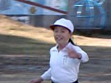
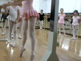
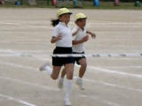
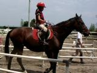
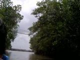
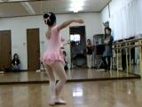
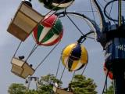
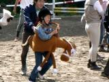
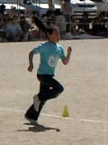
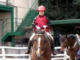

由起子のビデオ(No161-170) |
 |
2007年12月5日撮影 (1353KB) 持久走大会。 スタートして運動場を走って南門から出て行くときは３番で、 「マッマー！」と元気に手をふって走っていったけど、その後 ヘトヘト・・・おまけに、２箇所でころんでしまい、 元気坂に戻ってきた頃には大泣きのユキコでした。来年リベンジだぞ！ |
 |
2007年10月27日撮影 (422KB) たまにはバレエの練習風景を撮影して、悪いところを直そう・・・ と思いましたが、撮影しただけで終わってしまったね。（反省） |
 |
2007年9月29日撮影 (454KB) 秋の運動会。徒競走で見事１等賞（？）に輝きました！ 走るの大〜好き・・・・と言ってます。 |
 |
2007年8月17日撮影 (1883KB) 16日の早朝に関空へ帰り着き、そのまま乗馬合宿（ジュニア合宿）に 参加。由起子の体力・気力はすごいです。脱帽！ これは、合宿2日目の「ジムカーナ競技」の様子です。。。 |
 |
2007年8月12日撮影 (1971KB) シンガポールからマレーシアへ日帰りドライブ。ワイキエ氏に感謝！ マレーシアの熱帯林（マングローブの森）散策です。 |
 |
2007年6月23日撮影 (1380KB) 久しぶりにバレエレッスンを撮影。 柔軟（ストレッチ）体操や筋力アップはとても大切です。 怠けずコツコツと頑張ってね。気を抜くと、ママみたいになっちゃうぞー！ |
 |
2007年5月27日撮影 (827KB) じいちゃん＆ばあちゃんの金婚式お祝い旅行（賢島）へ。 すごいなぁ〜結婚５０周年記念だなんて。 この写真は、２日目に立ち寄った「パルケエスパーニャ」 |
 |
2007年5月20日撮影 (975KB) 乗馬祭に初参加。馬の顔を見て名前を当てたり、障害物リレーが あったり・・・・なんともユニークなお祭りでした。ユッコはあちこちに出没し 存分に楽しんでいた模様。ママとパパも楽しませてもらいました。 |
 |
2007年4月29日撮影 (642KB) ファミリー運動会に参加。 １週間前からこの日を楽しみにしていた由起子です。 プログラム１番のパン食い競争に遅れたら大変と大張り切りでしたが、 パンがなかなかかぶれず、結局ドベツーだったとか。 そのかわりに、この「障害物競争」とパパと参加した「二人三脚」は、見事 １番でした。あれやこれやに参加して、楽しい一日となりましたね。 |
 |
2007年3月28日撮影 (1147KB) 春休みの一日。 乗馬に行くことがとても良いリフレッシュになっています。 馬の目を見ていると癒されるし、森林浴パワーもあるし、 鶯の鳴き声や、景色などもサイコーです。 |